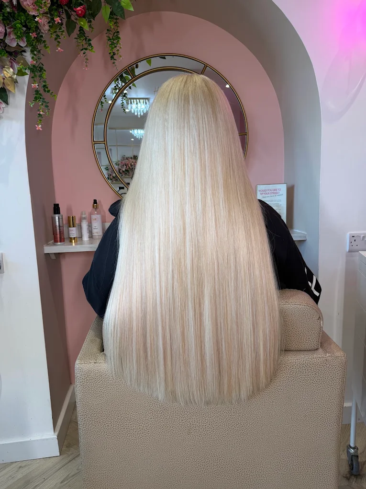
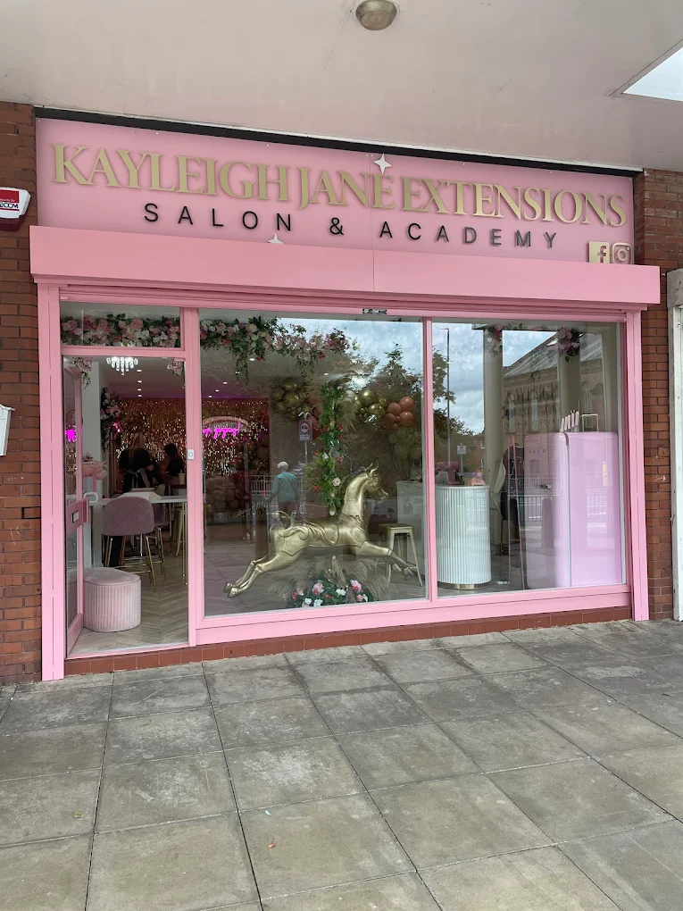
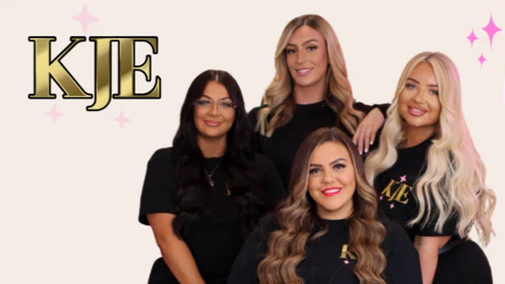

Confidence
If you've ever felt that your hair lets down an otherwise great outfit or makeup look, the right extensions can change how you feel when you look in the mirror.
Hair Extensions · Leeds
Whether your hair is fine, you're looking for more fullness, or you simply want to feel more confident when you leave the house, we'll help you find an extension solution that looks natural, feels comfortable and works with your own hair.
From careful colour matching to a gentle, considered fitting, everything starts with understanding your hair and the result you want.

If you've ever felt that your hair lets down an otherwise great outfit or makeup look, the right extensions can change how you feel when you look in the mirror.
Everything is explained clearly, your hair is handled gently and your fitting is carried out with care, so you can feel comfortable throughout your appointment.
We'll take the time to find the shades that work with your hair and create a natural blend, so the finished result feels seamless from root to ends.
Your hair, done properly
The goal isn't simply to give you longer or fuller hair. It's to create a result that works with your natural hair, matches your colour beautifully and feels comfortable enough to become part of your everyday life.
Your extensions should blend into your own hair rather than stand out from it.
Careful colour matching and thoughtful fitting help create a finish that looks like it belongs to you.
If you've ever felt that your hair lets down an otherwise great outfit or makeup look, the right extensions can change how you feel when you look in the mirror.
Leave feeling happier, more confident and ready to wear your hair your way.
You shouldn't have to spend your appointment feeling worried or uncomfortable.
Everything is explained clearly, your hair is handled gently and your fitting is carried out with care.
There isn't one extension solution that suits everyone.
We'll look at your hair, listen to what you're hoping to achieve and help you understand which option is best suited to you.
Fine hair? Start here.
If your hair has always felt too fine, difficult to style or like it lets you down when you want to feel your best, extensions can give you the fullness and confidence you've been missing.
We'll work with your existing hair to create a result that feels natural and looks like it belongs to you.
Talk About Your HairStart with a conversation about your hair, what you'd like to achieve and any concerns you have.
Find the shades that blend naturally with your existing hair for a finished result that feels like yours.
Create the length, fullness or overall look you've been wanting, with an approach chosen around your own hair.
Keep your extensions looking and feeling their best with careful refitting and ongoing care.

From consultation to aftercare
Your appointment should feel as good as the finished result.
We'll listen to what you want, explain what's happening and make sure you feel comfortable throughout the process.
Tell us what you want to change, what you've struggled with and how you'd like your hair to look and feel.
We'll assess your hair and work through the colour and extension approach that best suits you.
Your extensions are fitted carefully, with attention to comfort, detail and the finished blend.
You'll be given clear aftercare advice so you know how to look after your new hair once you leave.
How you want to feel
Imagine getting ready without worrying that your hair is letting you down. Imagine putting your outfit on, doing your makeup and actually loving how your hair finishes the look.
Hair that looks natural.
Your extensions should blend into your own hair rather than stand out from it.
Natural-looking results
Hair that feels comfortable.
Everything is explained clearly, your hair is handled gently and your fitting is carried out with care.
Comfortable from fitting to finish
Hair you feel confident wearing.
Leave feeling happier, more confident and ready to wear your hair your way.
More confidence in your hair

Meet Kayleigh Jane Extensions
Kayleigh Jane Extensions is a Leeds-based specialist hair extension salon helping clients achieve fuller, longer and more confidence-giving hair.
The approach is simple: understand your hair first, then create a result that works with it.
From careful colour matching and gentle fitting to clear aftercare advice, the focus is on giving you hair that looks natural, feels comfortable and makes you feel good when you see yourself in the mirror.
Kayleigh Jane is also an International Educator and 19× award-winning hair extension specialist, with features listed in Vogue, ELLE and Harper's Bazaar.
Before your appointment
Fine hair doesn't automatically mean extensions aren't an option.
Your hair will be considered during your consultation so the most suitable approach can be discussed with you.
You don't need to work that out on your own.
Your consultation gives you the opportunity to explain what you want, discuss your hair and get advice on the approach that's best suited to you.
A natural result starts with the right colour match and the right approach for your hair.
We'll take time to match your shades carefully and consider how the extensions will work with your existing hair.
Comfort is an important part of the fitting.
Your hair is handled carefully and everything is explained throughout your appointment, so you can feel comfortable with the process.
You'll talk through your hair, what you'd like to achieve and any concerns you have.
We'll then discuss the appropriate extension approach and colour options for your hair.
Use the booking link to arrange your consultation.
Book a ConsultationReady for hair you'll feel confident wearing?
Whether you're looking for more fullness, longer hair, a better colour match or simply want to feel more confident when you look in the mirror, it starts with a consultation.
Book Your Consultation